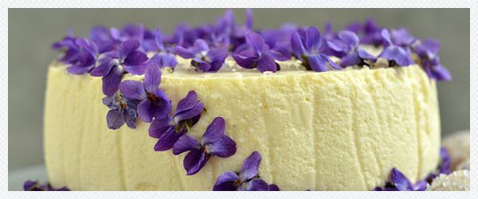

Sernik migdałowy
Spód
- kilkanaście ciasteczek amaretti i kilka biszkoptów
- 4-5 łyżek likieru amaretto lub lekko osłodzonej wody z ekstraktem migdałowym
Sernik
- 800 g trzykrotnie zmielonego sera białego lub sera homogenizowanego
- 2 duże łyżki żelatyny
- 100 g miękkiego masła
- 4 jajka
- 130 g drobnego cukru (nieco więcej niż pół szklanki, może być też ksylitol (ksylitolu mniej, do smaku, trzeba próbować masę)

Herbatniki i biszkopty pokruszyć na grube okruchy i wysypać nimi dno tortownicy. Brzegi formy nasmarować (mało i niedokładnie) masłem i wyłożyć przyciętymi na wysokość rantu paskami papieru do pieczenia. Umożliwią one później łatwe odklejenie brzegu deseru. Można pominąć tę czynność i po zastygnięciu ciasta, przy zdejmowaniu rantu zanurzyć formę na krótką chwilę w gorącej wodzie. Pokruszone ciastka skropić likierem. Żelatynę rozpuścić w dwóch, trzech łyżkach wrzącej wody, lekko ostudzić. Mieszać od czasu do czasu. Masło utrzeć mikserem z łyżką cukru, po chwili powinno lekko zjaśnieć. Jajka umyć i sparzyć. Oddzielić żółtka od białek. Białka ubić ze szczyptą soli na sztywną pianę. Kiedy będzie prawie gotowa, dodawać po łyżce połowę cukru. Ubijać aż będzie lśniąca. Żółtka utrzeć z drugą połową cukru na jasną masę. Dodać je do masła i ubijać do połączenia. Ucierając, do masy dokładać po łyżce sera. Żelatynę przemieszać, dodać dwie łyżki masy serowej. Wymieszane wlać pod łopatki miksera cienką strużką. Gdyby się ścięła, można króciutko ją podgrzać nad parą lub w mikrofali. Ubijać masę jeszcze chwilę, aż wszystko się połączy. Masę wylać na pokruszone herbatniki. Odstawić do lodówki na 5-6 godzin lub dłużej.